Code
library(ggplot2)
ggplot(mpg, aes(x = displ, y = hwy, colour = class)) +
geom_point()This chapter is a comprehensive exploration of three pillars of the Grammar of Graphics: aesthetics, facets, and guides. It is written in a deliberately expansive style — designed not as a terse technical reference but as a sustained, book-length conversation with you as the reader. The goal is to create a document that you could study over several hours, pausing to run the R code, reflect on the prose, and interrogate the design choices implied by every plot.
The inspiration comes from both Bertin’s Semiology of Graphics (1967) and Wilkinson’s Grammar of Graphics (2005), alongside contemporary extensions embodied in R’s ggplot2 package (Wickham, 2016). Where the original documents sometimes present the content as compact taxonomies, here I will expand each idea into narrative form, provide psychological and historical context, and reinforce the discussion with R-based graphical experiments.
Think of this as a field guide to perception and design for statisticians, data scientists, and visual communicators.
At its core, an aesthetic is a channel through which data is rendered perceptible. Data, in its raw form, is abstract. We cannot “see” the number 4.7 or the category “diesel car.” Only when these numbers and categories are mapped onto perceptible stimuli — position, colour, size, shape — do they enter our sensory field.
R’s ggplot2 codifies aesthetics through the aes() function. Each argument to aes() defines a mapping between a variable in the dataset and a perceptual channel. For example:
library(ggplot2)
ggplot(mpg, aes(x = displ, y = hwy, colour = class)) +
geom_point()Here, displ (engine displacement) is mapped to the x-position, hwy (highway miles per gallon) to the y-position, and class (vehicle type) to colour. The grammar declares not what kind of plot this is, but how data is mapped into perception. The geom_point() layer then provides the form (points).
Aesthetics are therefore not superficial style decisions but the grammar’s deep structure. If you misunderstand them, you mis-specify the communication of your data.
When continuous variables are mapped to an aesthetic, human perception comes into play. The central lesson from psychophysics is that perception is not linear.
This matters when we map data to size. Consider a bubble plot:
ggplot(mpg, aes(x = displ, y = hwy, size = cyl)) +
geom_point(alpha = 0.6) +
scale_size_continuous(range = c(2, 12))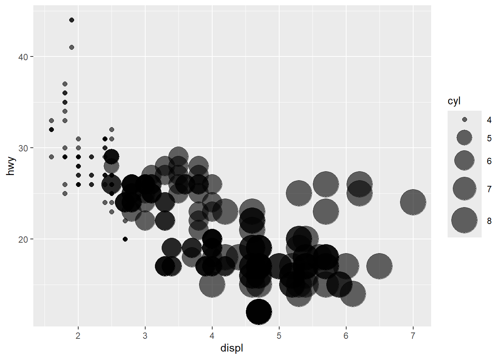
A car with 8 cylinders does not appear “twice as big” as one with 4 cylinders. This is because the perception of area grows sublinearly — our eyes are not good at judging proportional changes in area. In this plot, we are mapping the variable cyl (number of cylinders) to the size aesthetic, which changes the diameter of the points on screen.
Now here’s where things get subtle: when we specify aes(size = cyl), ggplot2 establishes a default continuous scale, but it also applies internal transformations to convert data values into appropriate sizes for plotting. This is where the function scale_size_continuous() comes in. It’s not about triggering the mapping (which already occurs in aes()), but about controlling how that mapping behaves — including the minimum and maximum point sizes on screen, the transformation of the scale (linear, log, sqrt), and how missing values are handled.
For example, we can write:
ggplot(mpg, aes(displ, hwy, size = cyl)) +
geom_point(alpha = 0.6) +
scale_size_continuous(range = c(2, 12))The line scale_size_continuous(range = c(2, 12)) ensures that the smallest value of cyl maps to a point with size 2 (in mm) and the largest to size 12, with other values interpolated. This gives us control over perceptual span, allowing us to modulate exaggeration or compression.
You might wonder: since aes(size = cyl) is already there, why do we need scale_size_continuous() at all? The answer is: the scale function customises the visual scale, just like scale_x_continuous() adjusts axis breaks, labels, limits, or transformations for the x-axis. Without it, ggplot2 will use default settings — which may or may not suit your perceptual goals.
In short, aesthetics (aes) declare what to map, while scale functions like scale_size_continuous() declare how to perform the mapping. This distinction is foundational to ggplot2’s grammar.
By contrast, position on a common scale is perceived with near-linear fidelity. Cleveland and McGill (1984) showed that position is the most accurate channel, followed by length, angle, and slope. Area and colour hue perform less well.
Categorical variables are usually mapped to colour hue or shape. Here psychology matters differently: categories are perceived against the backdrop of cultural learning and biological limits.
ggplot(iris, aes(Sepal.Length, Sepal.Width, colour = Species, shape = Species)) +
geom_point(size = 3)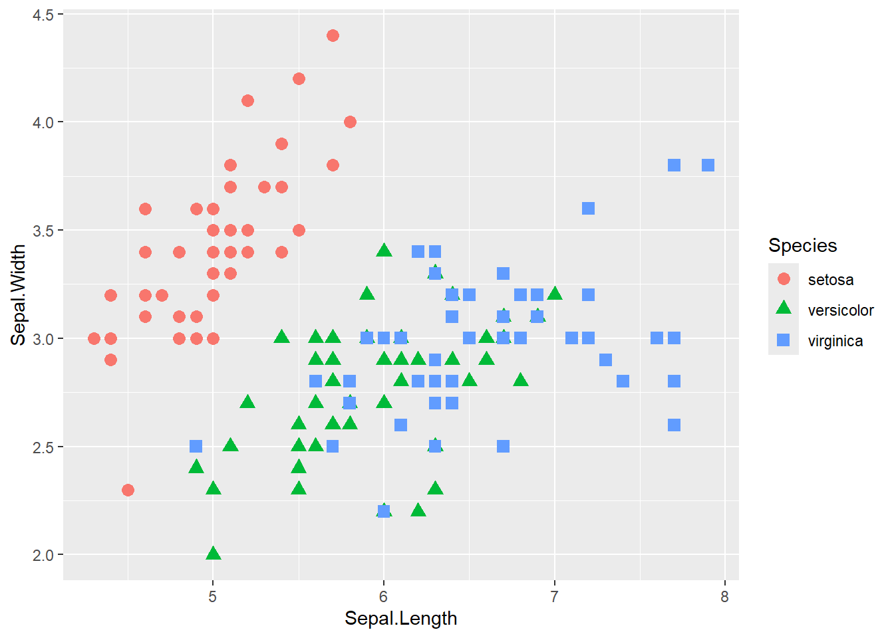
In this plot, we use both colour and shape redundantly. Redundancy can be good — if printed in black and white, shape still distinguishes species. But redundancy can also overload the graphic if every aesthetic channel is employed unnecessarily.
Some aesthetics can be judged independently (separable), while others blend together (integral). Size and colour are separable: you can judge the size of a circle independent of its colour. Hue and brightness are integral: increasing brightness changes the perception of hue.
ggplot(iris, aes(Sepal.Length, Sepal.Width,
size = Petal.Length, colour = Petal.Width)) +
geom_point(alpha = 0.7)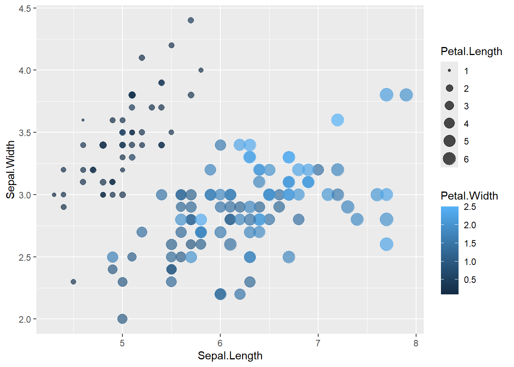
Here, size and colour are separable: you can read one without being distorted by the other. If we had used hue and brightness simultaneously, judgments would have been confounded.
The canonical list (after Bertin, extended by Wilkinson) includes:
ggpattern).gganimate).Each will be treated in extended prose with examples.
Position is the workhorse aesthetic, though for many scientists and analysts, it’s not immediately intuitive to think of x and y as mere “aesthetics.” In most modelling tasks, the x- and y-axes represent the central conceptual relationship under investigation — say, dose versus response, time versus yield, or GDP versus life expectancy. Calling them “aesthetics” can feel like relegating the heart of the analysis to a cosmetic layer. But in the Grammar of Graphics, aesthetics do not mean superficial styling; they are the very channels through which data becomes visible.
What aes(x = ..., y = ...) is really doing is telling ggplot2 how to visually encode those model variables as position — the most perceptually accurate aesthetic channel available. When you add other layers (like geom_point(), geom_smooth(), geom_rug()), they all inherit these positional mappings unless you override them. If multiple layers define different x or y mappings, ggplot2 will either throw an error or render the plot using the most recent local mapping, depending on whether aes() was defined globally (in ggplot()) or locally (inside a specific layer).
Thus, position is foundational — but not immune to override. And scales like scale_x_continuous() and scale_y_continuous() further govern how the data range is mapped to screen coordinates, including limits, breaks, labels, transformations, and expansion buffers. The combination of aesthetics + geoms + scales is what makes the data speak through space.
ggplot(mpg, aes(x = displ, y = hwy)) +
geom_point() +
geom_smooth(method = "lm") +
scale_x_continuous(name = "Engine Displacement (L)", limits = c(1, 7)) +
scale_y_continuous(name = "Highway MPG")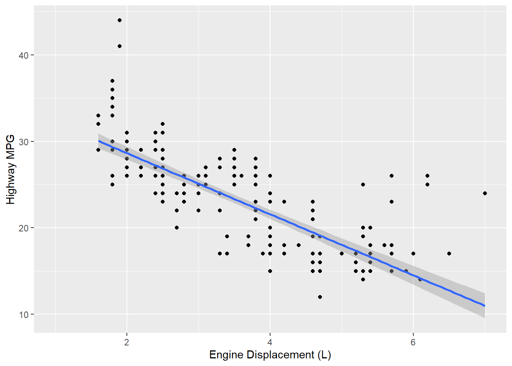
This plot combines position as an aesthetic, two geoms (points and smoothed line), and custom scales. The position aesthetic dominates perception — and rightly so — but thinking of it as an aesthetic aligns it with all other perceptual mappings under a unified framework.
ggplot(mpg, aes(x = displ, y = hwy)) +
geom_point() +
geom_smooth(method = "lm", se = TRUE)
Here the regression line is interpretable only because position is so well perceived.
Size is commonly misused — both in casual visualisation and in professional data graphics. The central issue is that human beings are poor at estimating relative areas and angles, especially when these are not aligned to a common scale. A classic example is the pie chart: it maps proportions to angles (and thereby area segments of a circle), which are difficult to compare accurately. Viewers struggle to judge whether one slice is, say, 27% or 32%, and whether another slice is twice as large or not — especially when labels are removed or distorted by 3D effects.
This perceptual limitation is not a mere theoretical complaint. It has been confirmed by decades of empirical work in graphical perception (notably by Cleveland & McGill, 1984), which shows that mapping values to position along a common axis is far more effective for quantitative accuracy than using area or angle. For this reason, bar charts — where proportions are encoded as length along a shared axis — vastly outperform pie charts in both accuracy and interpretability.
In ggplot2, this design principle is straightforward to implement. Instead of creating a pie chart, one can simply map a categorical variable to the x-axis and count or summarise:
# A flawed pie chart
pie(table(mpg$class), col = rainbow(7))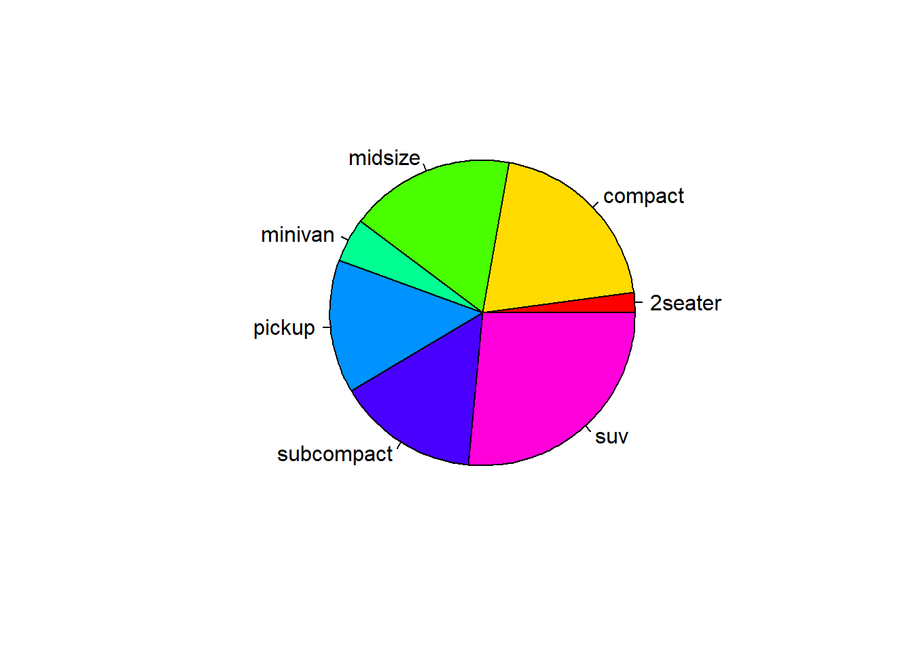
# A better bar chart
ggplot(mpg, aes(x = class)) +
geom_bar() +
coord_flip()
The flipped bar chart uses vertical space for labels, maps count to a linear scale, and presents all categories for easy comparison. Even for proportions (rather than raw counts), bar charts can be made proportionally accurate using geom_bar(position = "fill") or by computing percentages manually. In all cases, the use of length instead of area offers a perceptually superior route for displaying comparative quantities.
# A flawed pie chart
pie(table(mpg$class), col = rainbow(7))# A better bar chart
ggplot(mpg, aes(x = class)) +
geom_bar() +
coord_flip()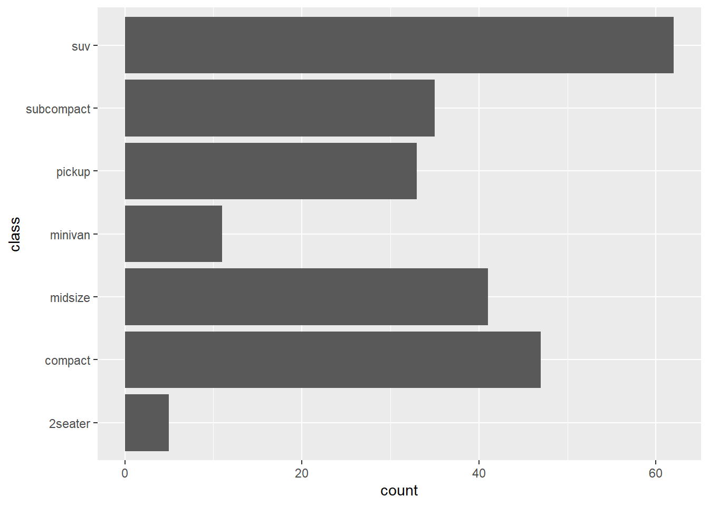
The bar chart uses position (length) and is therefore more accurate.
Colour encodings require careful design. Hue is good for categories, but saturation/brightness are better for ordered data.
Importantly, any use of colour in graphics should consider the roughly 8% of men and 0.5% of women who have some form of colour vision deficiency (CVD), such as red-green colour blindness. Colours that appear distinct to most viewers may be indistinguishable to those with CVD. For categorical colour palettes, use tools like viridis, colorBlindness, or RColorBrewer palettes with documented accessibility. For continuous scales, palettes like viridis, plasma, and magma from the viridis package are perceptually uniform and colourblind-safe.
# A colourblind-friendly gradient
library(viridis)
ggplot(mpg, aes(displ, hwy, colour = cty)) +
geom_point() +
scale_colour_viridis(option = "C", direction = -1)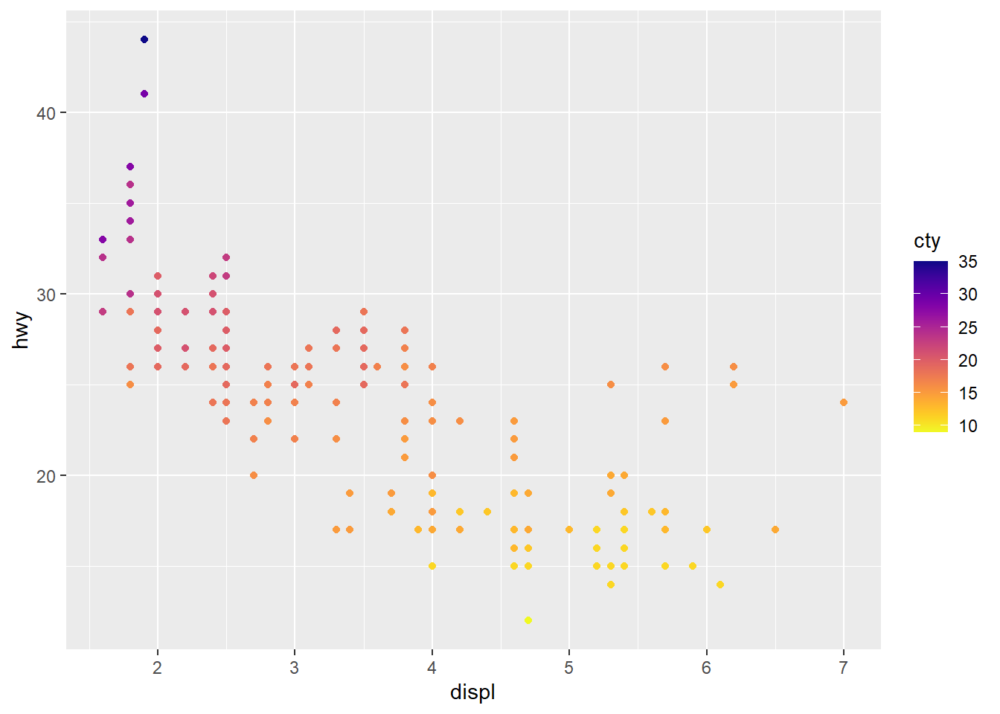
ggplot(mpg, aes(displ, hwy, colour = cty)) +
geom_point() +
scale_colour_gradient(low = "blue", high = "red")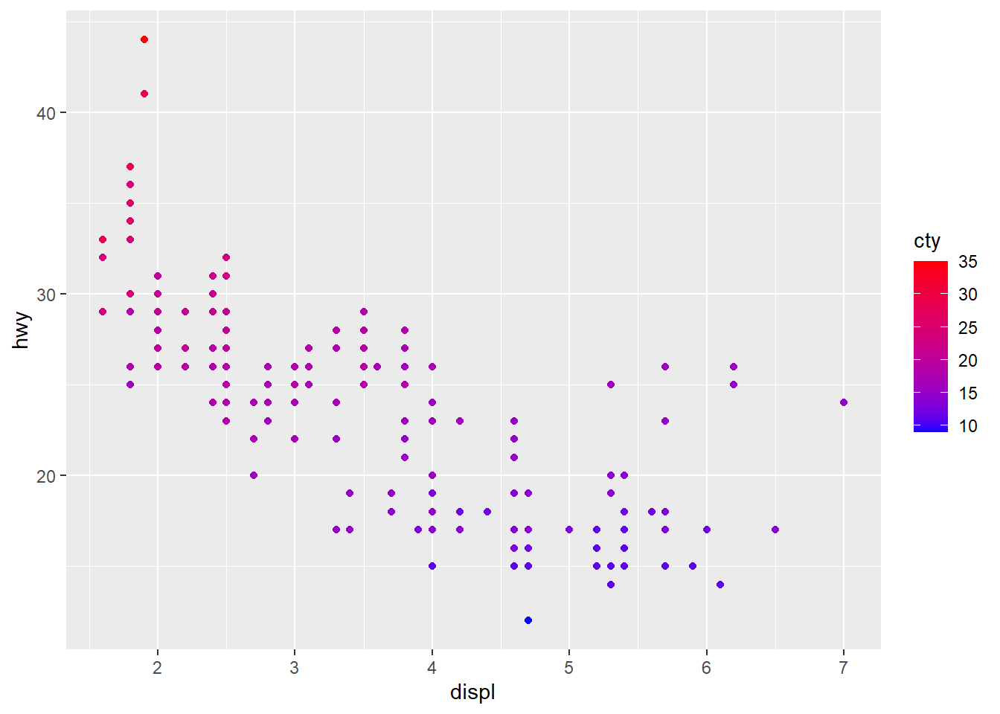
This gradient implies order (blue = low city mpg, red = high). If we had instead used a rainbow palette, spurious patterns would appear due to non-uniform perceptual differences.
Alpha solves overplotting by showing density.
ggplot(mpg, aes(displ, hwy)) +
geom_point(alpha = 0.3)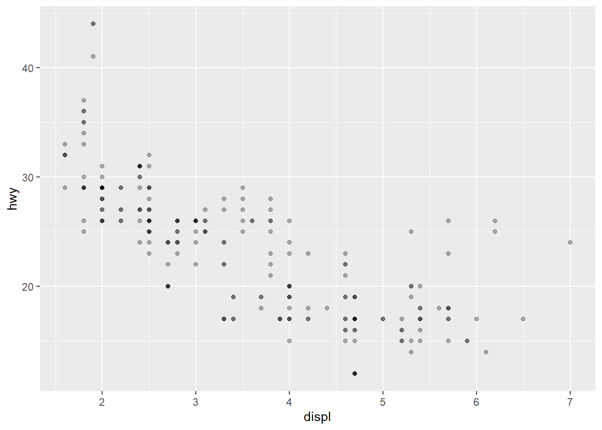
Clusters become visible where points overlap. This simple aesthetic is one of the most powerful in large datasets.
Shape can encode categories, but only a handful at once.
ggplot(iris, aes(Sepal.Length, Sepal.Width, shape = Species)) +
geom_point(size = 3)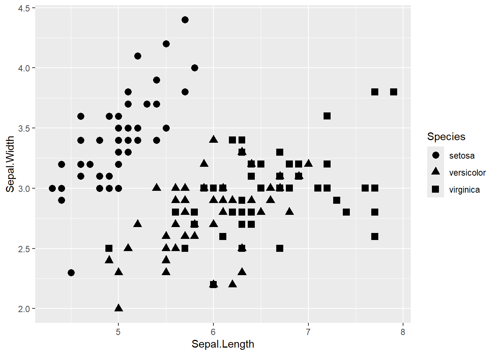
Texture (patterns in fills) is rarer but useful in monochrome printing. Packages like ggpattern add hatching, stripes, dots.
# Example using ggpattern (if installed)
# geom_bar_pattern(aes(pattern = Species))Facets divide data into subsets and display them in a structured arrangement. Edward Tufte called this “small multiples” — the same graph repeated, only the data differing.
In ggplot2, we use facet_wrap() and facet_grid().
ggplot(mpg, aes(displ, hwy)) +
geom_point() +
facet_wrap(~ class)
This produces a panel for each car class.
ggplot(mpg, aes(displ, hwy)) +
geom_point() +
facet_grid(drv ~ cyl)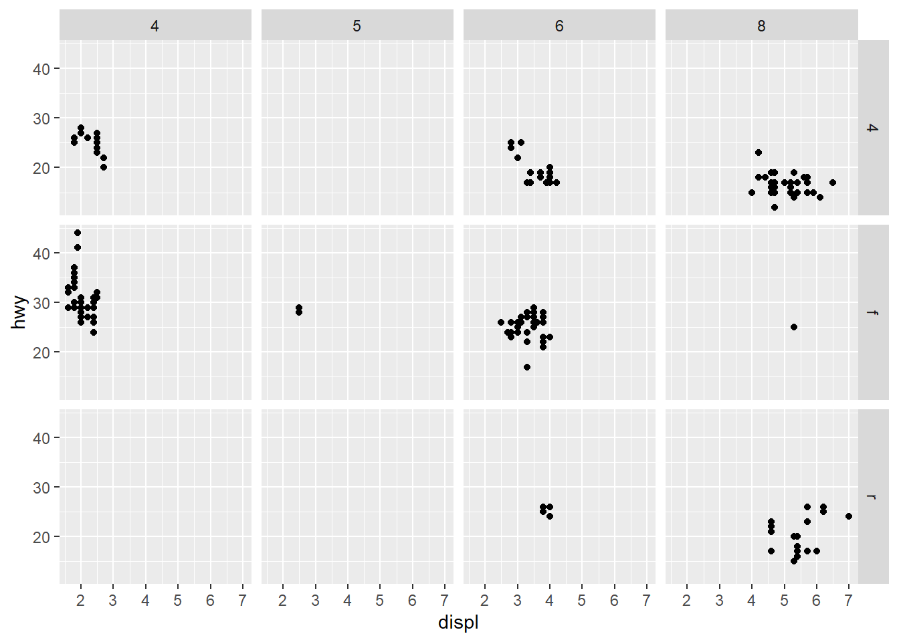
Here we get a crossing of drive type by cylinder count.
Facets extend beyond grids: mosaics, polar arrangements, trellis trees. While ggplot2 defaults to grid layouts, the principle generalises widely.
In everyday data visualisation, a legend is simply the box that tells you what colours, shapes, or sizes correspond to which variables — a decoding key. Axes are the lines with tick marks and labels that tell you how far along a scale a point lies. These are intuitive concepts, often considered merely technical or stylistic.
But in the Grammar of Graphics, both axes and legends are types of guides — components that help the viewer decode the aesthetics. Every aesthetic mapping needs a corresponding guide to make it understandable.
We distinguish between several types of guides:
Let’s begin with scale guides.
In ggplot2, axes are the guides for positional aesthetics (x and y). They show the range and scale of the data — including axis lines, tick marks, tick labels, and axis titles. You control them via scale_x_*() and scale_y_*() functions.
Legends, by contrast, are guides for non-positional aesthetics like colour, fill, shape, size, and linetype. They appear by default when an aesthetic is mapped to a variable, and they are essential for interpretation.
ggplot(mpg, aes(displ, hwy, colour = class)) +
geom_point() +
guides(colour = guide_legend(title = "Car Class"))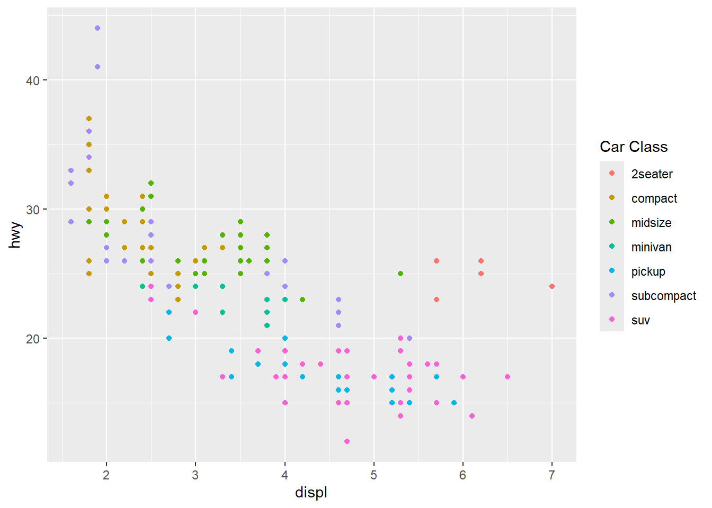
This code maps class to colour, and then creates a legend that shows what each colour means. The guide_legend() function allows further control — for example, renaming the legend title, reordering items, or adjusting the key size.
labs() or scale_*() functions to override this.ggplot(mpg, aes(displ, hwy, colour = cty)) +
geom_point() +
labs(colour = "City MPG")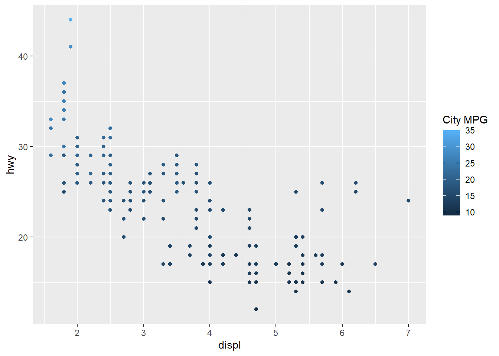
If your aesthetic mapping uses a transformed version of a variable, e.g. aes(colour = log2(cty)), ggplot2 will often drop the legend altogether unless explicitly told to show it. This is because derived variables don’t inherit names automatically.
If you map a variable to both an aesthetic and a layer’s fill or colour, but override it locally, the global guide might still show it unless suppressed.
When you map a constant (like aes(colour = "red")) instead of a variable, no legend is created — because there’s nothing to decode.
Understanding how ggplot2 builds and displays guides is essential. Aesthetics define the mapping, but guides explain that mapping to the viewer. Bad guides lead to misinterpretation, confusion, or inaccessibility.
In the following sections, we’ll discuss annotations and icon-based guides, which are not controlled by the scale system but are equally vital to good visual communication.
Guides connect the aesthetic back to data. For position, guides are axes. For colour/size/shape, guides are legends.
ggplot(mpg, aes(displ, hwy, colour = class)) +
geom_point() +
guides(colour = guide_legend(title = "Car Class"))Annotations mark outliers, thresholds, or important features.
ggplot(mpg, aes(displ, hwy)) +
geom_point() +
annotate("text", x = 6, y = 40, label = "Outlier?", colour = "red")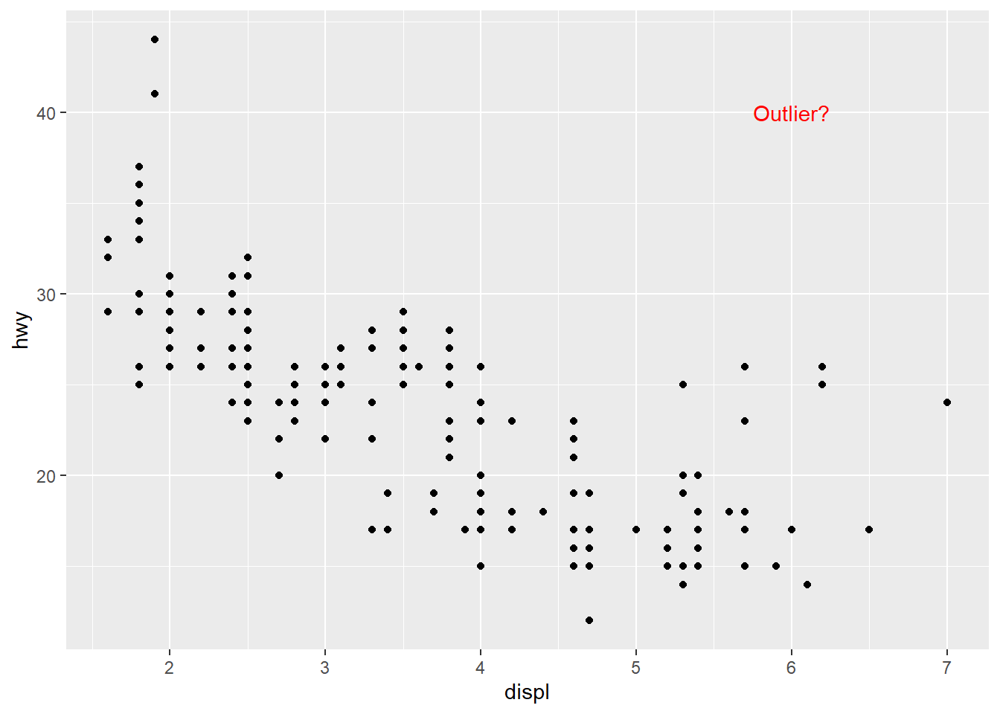
Arrows, shaded regions, and labels provide non-data cues.
Sometimes guides are pictorial. For example, meteorological plots use cloud icons instead of categorical labels. In R, packages like ggimage allow embedding images in legends.
# Example (requires ggimage)
# ggplot(df, aes(x, y, image = icon)) + geom_image()Give a presentation of your critical review of the design of aesthetics in the grammar of graphics. Do they make sense from your perspective?